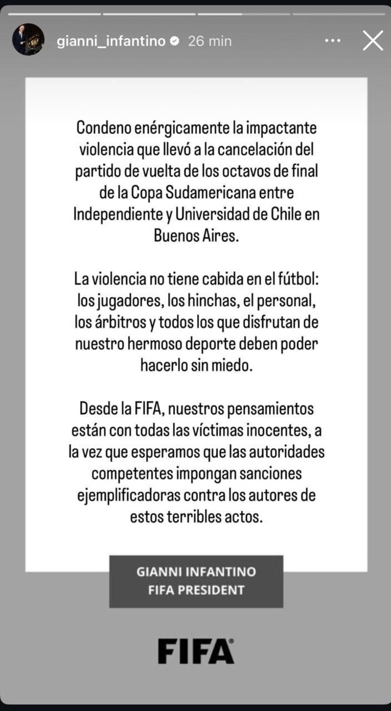

El presidente de la FIFA, Gianni Infantino, se expresó este jueves tras la feroz pelea entre hinchas de Independiente y Universidad de Chile durante un partido de la Copa Sudamericana en el estadio Libertadores de América, en Avellaneda.
"Condeno enérgicamente la impactante violencia que llevó a la cancelación del partido de vuelta de los octavos de final de la Copa Sudamericana entre Independiente y Universidad de Chile en Buenos Aires", comenzó diciendo el dirigente.
En otro párrafo, Infantino expresó: "La violencia no tiene cabida en el fútbol: los jugadores, los hinchas, el personal, los árbitros y todos los que disfrutan de nuestro hermoso deporte deben poder hacerlo sin miedo".
En el final de su mensaje, Infantino se pone del lado de las víctimas de las tristes imágenes que se vieron en la noche de Avellaneda y apunta a los responsables. "Desde la FIFA, nuestros pensamientos están con todas las víctimas inocentes, a la vez que esperamos que las autoridades competentes impongan sanciones ejemplificadoras contra los autores de estos terribles actos".
La Conmebol también compartió un comunicado: "En el marco de la suspensión y posterior cancelación del partido, la Confederación se encuentra recopilando datos y procesando información, los cuales están siendo remitidos a la Unidad Disciplinaria para la aplicación de las sanciones correspondientes", indicó el organismo rector del fútbol sudamericano en un comunicado.
El encuentro de vuelta de octavos de final fue cancelado luego de violentos enfrentamientos entre hinchas y barras, que dejaron más de un centenar de detenidos, la mayoría chilenos, y una veintena de heridos.